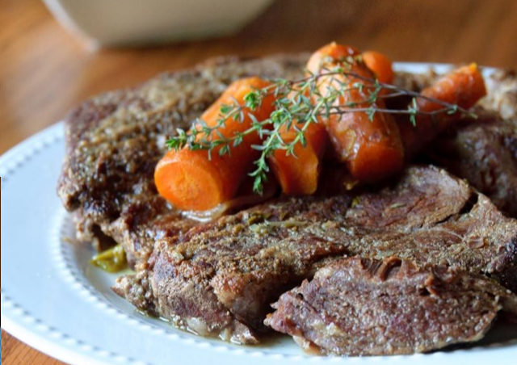

Instant Pot Pot Roast
Source
Return to main page

VERY tender and delicious.
Using the pressure cooker saves SO much time that this recipe can be used on a weekday and still you can manage to eat dinner at a decent hour.
- 2 tablespoons vegetable oil
- 1 (3 pound) boneless beef chuck roast, trimmed
- ground black pepper to taste
- 1 pinch seasoned salt, or to taste
- 1 pinch onion powder, or to taste
- 1 (14.5 ounce) can beef broth
- 1 ½ tablespoons Worcestershire sauce
- 1 large onion, cut into 4 wedges
- 4 carrots, peeled and cut into bite-size pieces
- 4 large potatoes, peeled and cut into bite-size pieces
- Heat oil in a pressure cooker over medium-high heat.
Brown roast on all sides in the hot oil; season with pepper,
seasoned salt, and onion powder.
- Pour in beef broth and Worcestershire sauce, add the
quartered onion, and seal the lid. Bring the cooker up to full
pressure. Reduce heat to low, maintaining full pressure, and cook for 30 minutes.
- Use the quick-release method to lower the pressure.
Mix in carrots and potatoes, seal the lid again, and return the pressure
cooker to the heat. Bring the cooker up to full pressure and cook for an additional
15 minutes. Use the quick-release method again and transfer the roast and vegetables
to a serving dish.
Return to top
Return to main page